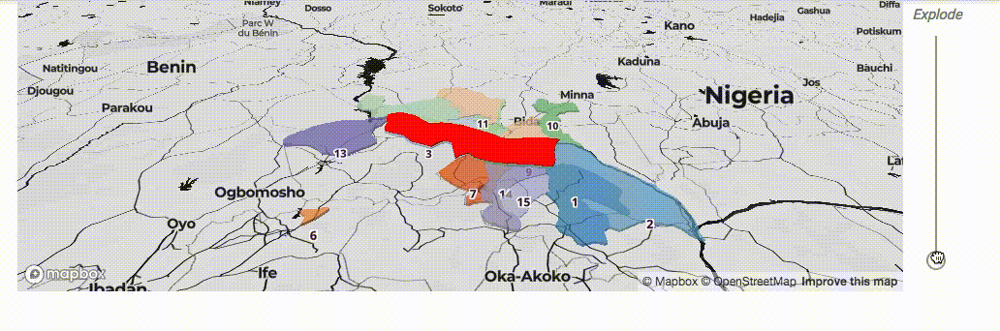
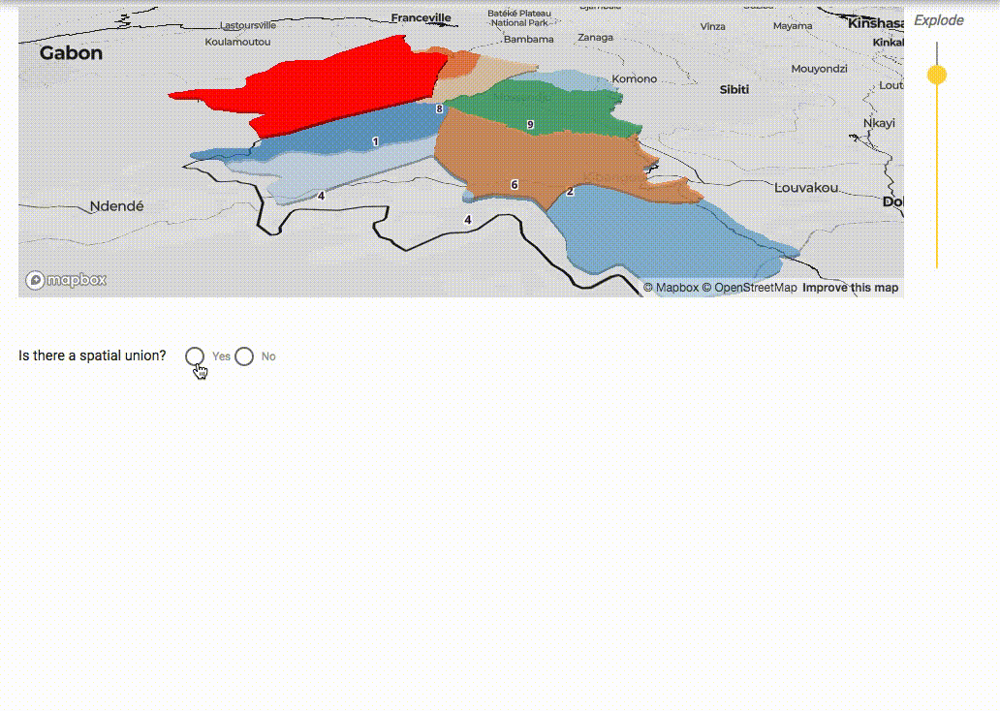

Hello, welcome, we' re going to do some things, is that ok?
We're trying to see if we can make spatial matching a bit better, but it's probably a fools errand.
By clicking the button, you agree to the terms described above
Before we begin, let's go over a few key concepts. The goal of this experiment is to evaluate the effectiveness of a novel geospatial visualization to help improve the process of identifying district reorganization in the global health context. Consider the two images below:
Here we can see 2 different views of the administrative districts of the city of Cidade de Maputo in Mozambique. What immediately stands out is that the administrative districts have been modified in the intervening years. This poses a challenge for longitudal research projects in that data collected from one district in 1990 may no be directly comparable in 2014.
One solution to this problem, is to identify spatial unions between different sets of district. A spatial union is when one district divides evenly into a number of separate districts, such that the new districts cover exactly the same area of the original district, no more, no less.
In this experiment, you'll be asked to look at 10 different collections of administrative districts and determine whether or not there exists a spatial union between a given district (marked in red) and any set of labeled districts on the map. If a union exists, you'll be asked to list which districts make up the union with the given object. If no union exists, you'll proceed to the next collection.
The following page will give a brief set of instructions on how to use the map.
Instructions:
Use the zoom handle on the right side of the map to raise and lower the test entity. Pan and zoom the map by using the right mouse button and the scroll wheel
If no union exists, click the No option and continue. If a union does exist, click the Yes option and then select all the contributing entitiies.
